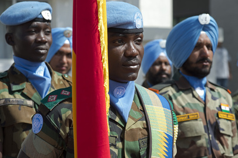
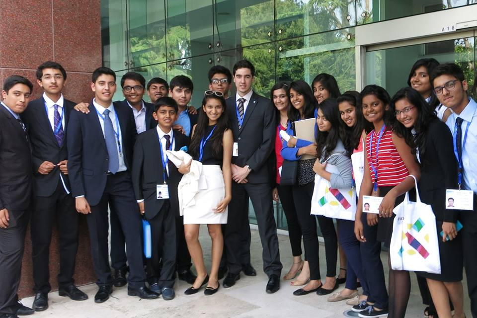

Apart from research, Model UN conferences are a test to your speaking skills.
All technical terms used in a MODEL UN Confrence
15 things delegates should include in their Research binder
Conference
1. Awards Policy. If you’re trying to win an award, then you should know what the conference values and what your chair is looking for.
2. Rules of Procedure. Rules tell you how committee is going operate, and what you can and cannot do. They differ for every conference — not just what the rules are, but how they are applied.
Committee
3. Your committee’s actual UN website. The goal of a committee is to pass a resolution, which depends on what a committee can and cannot do. You want to understand your committee’s mandate (why it was created), powers (what it can do), organization (how it fits into the UN and the larger international community), and membership (who’s in it).
4. UN Charter. If you are in a GA, ECOSOC, or Security Council committee, then the source of your committee’s power is the UN Charter. If you are in a regional organization like NATO or OAS, then you are still affected by the Charter, particularly Chapter VII on international security and Chapter VIII on regional arrangements.
Country
5. CIA Factbook. Every MUNers go-to source for essential information on their country. You want to know your country’s location, neighbors, population size, type of government, type of economy, trade partners, and the international organizations it’s a part of. Not knowing this information as your country’s representative can be potentially embarrassing.
6. Wikipedia. Information on your country’s history and its recent controversies. There should be articles on your topic, too. Wikipedia might not be edited as rigorously as a print publication, but you are not writing a paper – you’re attending a Model UN conference. Just take note of any potential issues that are listed at the topic of Wikipedia pages, e.g. “This article needs additional citations for verification.”
Topics
7. Background Guide. Either you, another delegate, or your chair will inevitably refer to something written in the committee’s background guide during a conference. Also, what your chair has written about is what he’ll focus on in committee. Use that knowledge to craft speeches and operative clauses that grab the chair’s attention.
8. News Articles. You want to know the latest news on your topics, as well as your own country. The simplest way to do this is to run searches on Yahoo! News and Google News, and print out the headlines. BBC Online also features easy-to-use timelines and profiles on your issues and country. Large publications like the New York Times and Wall Street Journal also have in-depth coverage on their websites.
9. Resolutions, Treaties, and Conventions. Before you can do anything on the topic, you need to know what’s already been done. You can find past resolutions through the UN documentation center, although it can be difficult to navigate. Once you’ve found the latest resolution, the perambulatory clauses should direct you to other resolutions. Also, the most relevant piece of international law on your topic might not be a past resolution, but instead a treaty or convention.
Policies
10. Speeches and Press Releases. These are the ways that policy-makers set policy. Be sure to use speeches and press releases from people in the executive branch of your country’s current government (President, Prime Minister, Foreign Minister / Secretary of State, Ambassadors). Legislators and judges may say something different, but as a representative of your country, you work for the Head of State / Head of Government. Start with the website for your country’s Ministry of Foreign Affairs / Department of State.
11. Voting Record. Actions speak louder than words. If your country’s leaders have not clearly articulated a policy on your topic, then you can infer it from how your country has voted on past resolutions, treaties, and conventions (or whether they were even present). Note that recent speeches may indicate a change in policy away from however your country has voted in the past, especially if your government has changed administrations. Nonetheless, you still want to know how your country’s past actions on the topic, for your own knowledge, and in case anyone asks.
Solutions
12. Op-Ed and Blog Articles. These writers are coming from a personal or journalistic perspective, but they can still give you ideas that you can propose in committee and use in resolutions. You can start with large publications like the New York Times or Wall Street Journal, but don’t forget about blogs, too. Just be aware of their biases, and make sure their ideas conform to your country’s policies.
13. Think Tanks. Organizations like RAND are paid to come up with solutions to the topics you discuss in Model UN. Think tank publications have more depth and evidence than an opinion article, but they’re typically not as dense as an academic paper. They might also be pushing a certain agenda, so be aware of that. Otherwise, they are a great starting point for proposing potential solutions.
14. Academic Papers. These are tough reads and the information is way too dense for Model UN. But they are probably the most insightful and rigorously edited sources you will find online. You can use Google Scholar to find papers. Don’t spent time trying to process a paper the way you would do for a class. Read the abstract and skim the paper for ideas that you can use in committee.
15. Your Ideas. Include in your binder your position papers, working papers, notes, thoughts, as well as blank lined paper – Don’t rely on a conference to bring enough paper for draft resolutions and note passing. You can do all the research you want, and you can be really fast and efficient at it, but none of that matters until you boil down what you’ve read into ideas that you can explain in your own words.